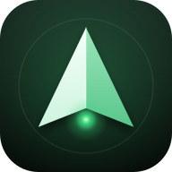

参与 NasPilot 封闭测试
只需 3 步，2 分钟，之后不用再做任何事。
不需要有群晖 NAS，装上就算参与。
不需要有群晖 NAS，装上就算参与。
步骤
- 用你的 Google 账号（安卓手机上登录 Play 商店的那个）打开下面的链接，点「成为测试人员 / Become a tester」。
- 页面会出现「在 Google Play 上下载」，点进去安装 NasPilot。用电脑打开链接也行，安装会推送到你的手机。
- 装好后打开一次即可，看到「连接到你的 NAS」页面就可以关掉了。
请注意
- 14 天内请不要退出测试或卸载，Google 按「连续 14 天在测试名单里」计数，中途退出会重新计。
- 只有 Google Play 服务正常的安卓设备能装。国内没有 Play 商店的手机装不了，但用电脑网页点「加入」也计数。
- 应用不会收集任何数据，没有广告，也不需要注册账号。隐私政策见 这里。
- 如果链接提示「不可用」，说明你的 Google 账号还没在测试名单里，把邮箱发给我加上即可：haha@superhaha.top。
NasPilot 是什么
群晖 NAS 的第三方安卓客户端：状态、文件、影音、下载、桌面小组件，还能用自然语言「问 NAS」找文件。适用于 DSM 6.2。有 NAS 的朋友欢迎真用一下并给反馈。
Join the NasPilot closed test
3 steps, 2 minutes, nothing else afterwards.
You don't need a Synology NAS. Installing the app is enough.
You don't need a Synology NAS. Installing the app is enough.
Steps
- Open the link below with the Google account your Android phone uses for Play Store and tap "Become a tester".
- Tap "Download it on Google Play" and install NasPilot. Opening the link on a computer works too; the install is pushed to your phone.
- Launch it once. When you see the "Connect to your NAS" screen you're done.
Please note
- Stay opted in for 14 days. Google counts testers who remain on the list for 14 consecutive days; leaving resets the clock.
- Only Android devices with Google Play services can install it. Opting in from a desktop browser still counts.
- The app collects no data, shows no ads and needs no account. Privacy policy here.
- If the link says "not available", your account isn't on the tester list yet. Send your Gmail to haha@superhaha.top and I'll add it.
- Happy to return the favour and test your app too.
What NasPilot is
A third-party Android client for Synology NAS (DSM 6.2): status, files, media, downloads, home-screen widgets, and an "Ask NAS" assistant that finds files from plain-language questions. The UI is in Simplified Chinese for now. If you own a Synology NAS, real feedback is very welcome.